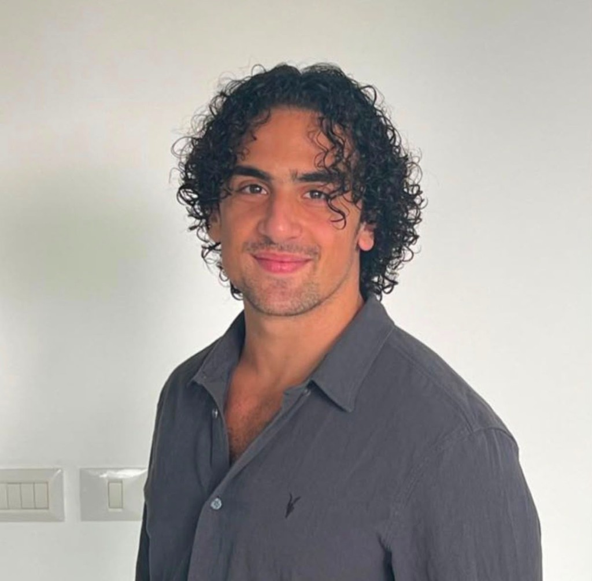
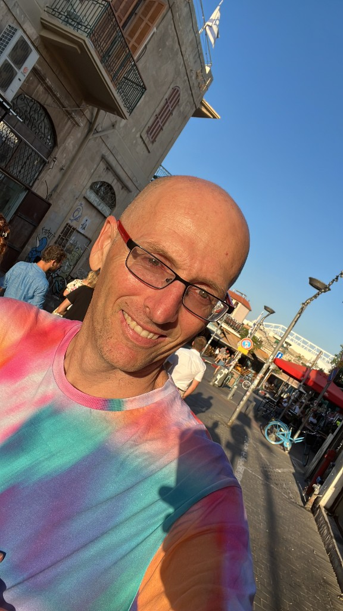

The people behind the organization
A small team, and deliberately so. Between us we bring clinical-trial management in psilocybin and MDMA studies, functional-neuroimaging research with survivors of the Nova festival attack, startup and investment experience in the psychedelics sector, and three and a half decades of building technology for organizations across sectors. What we share is a conviction that the gap between what the research suggests and what Israeli patients can access is unjustifiable, and a willingness to do the unglamorous work — regulatory filings, ethics submissions, briefing documents — that closing it requires.
Last reviewed:
Our Team

Yonatan Zairi
CEOYonatan serves as the CEO of Israelis for Ibogaine, bringing extensive expertise in clinical research and psychedelic therapy to the organization's leadership. With a foundation in Psychology from Reichman University, he has led pivotal research initiatives as a clinical trial manager overseeing breakthrough psilocybin and MDMA therapy studies. His background includes conducting specialized fMRI studies on NOVA festival survivors within a neuroscience laboratory at the Weizmann Institute of Science, deepening the clinical understanding of trauma and neuropharmacology. Additionally, Yonatan bridges the gap between scientific innovation and strategic development through his advisory work at the NEGEV fund, positioning him at the forefront of advancing novel therapeutic frameworks in Israel.
Jonathan Sinyor
Deputy CEOJonathan Sinyor is Deputy CEO of Israelis for Ibogaine. Originally from the UK and now based in Tel Aviv, he was part of the founding team that built a startup from formation through Series A, and has experience investing in the psychedelics space at an investment fund. He has organised educational events for mental health professionals working with emerging therapies and research and is a member of the Psychedelic Action Task Force, which lobbies the UK government for regulatory reform.

Ryan Heitner
Technology & AdvocacyA technologist with 35 years building and leading across continents, Ryan has shipped technology in organizations of every size and shape — startups to enterprises, spanning sectors from healthcare to consumer tech. His international career has given him a rare fluency in turning complex ideas into things that actually work. He is driven by a deep conviction in the healing power of psychedelics and a long-standing personal commitment to meditation and inner work. He is unafraid to challenge the status quo on access to ibogaine for those who need it most.
Help make ibogaine therapy available in Israel
Add your name to the public petition, or contact us about research collaboration, clinical partnership, volunteering, or media enquiries. We reply to every message.